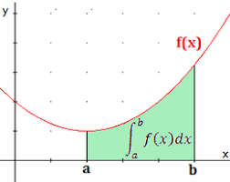
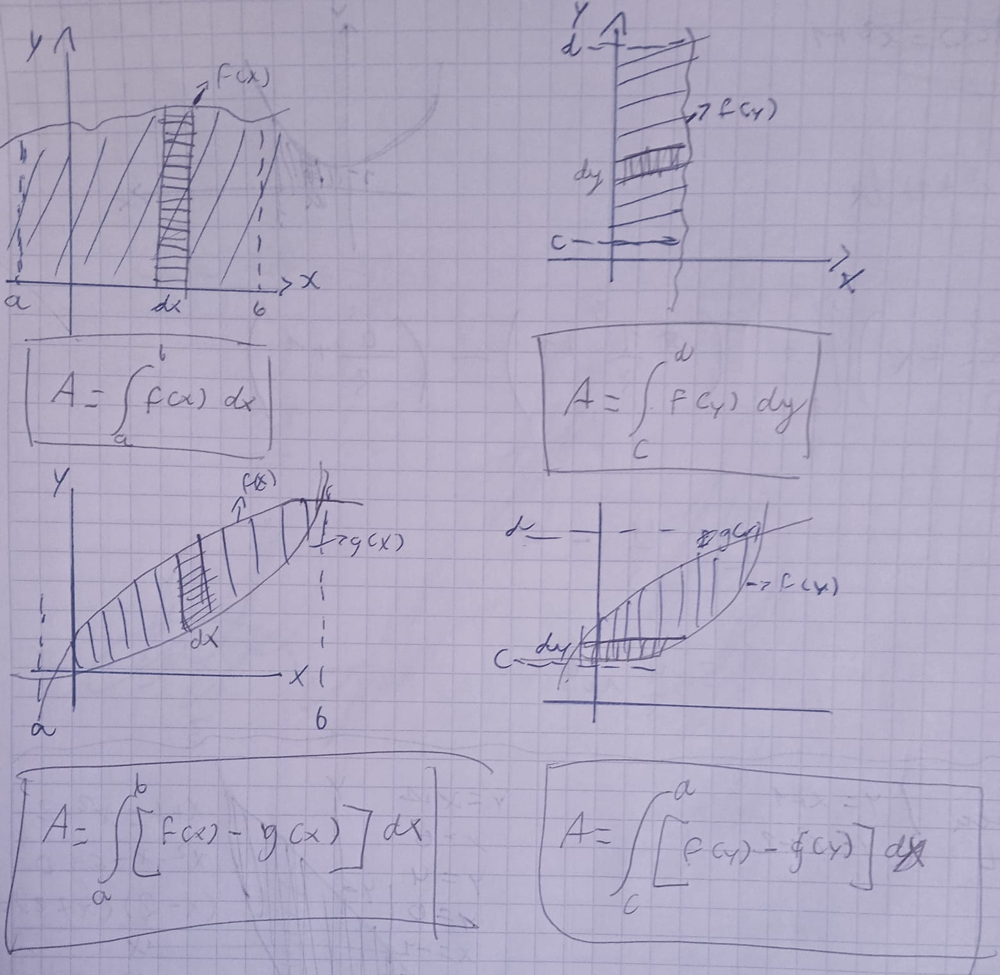
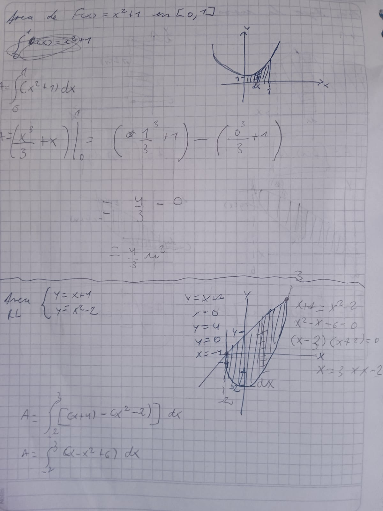
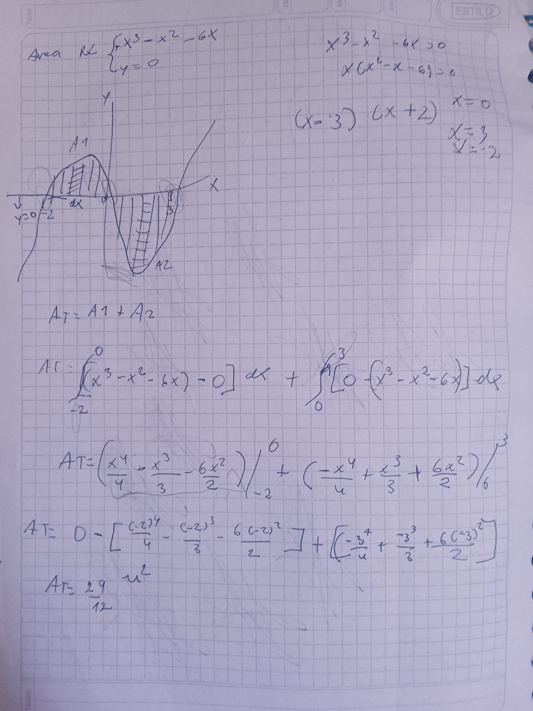
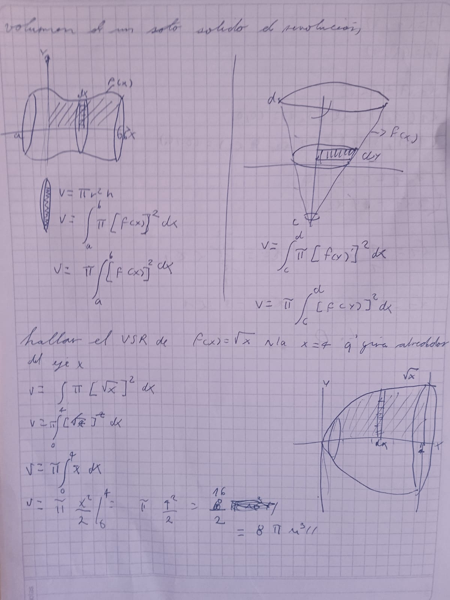
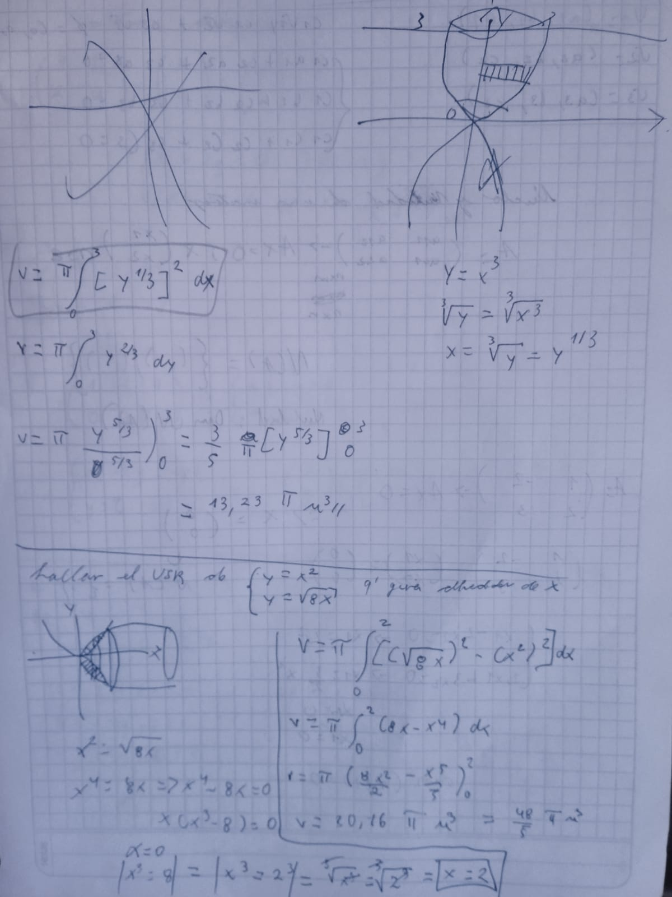
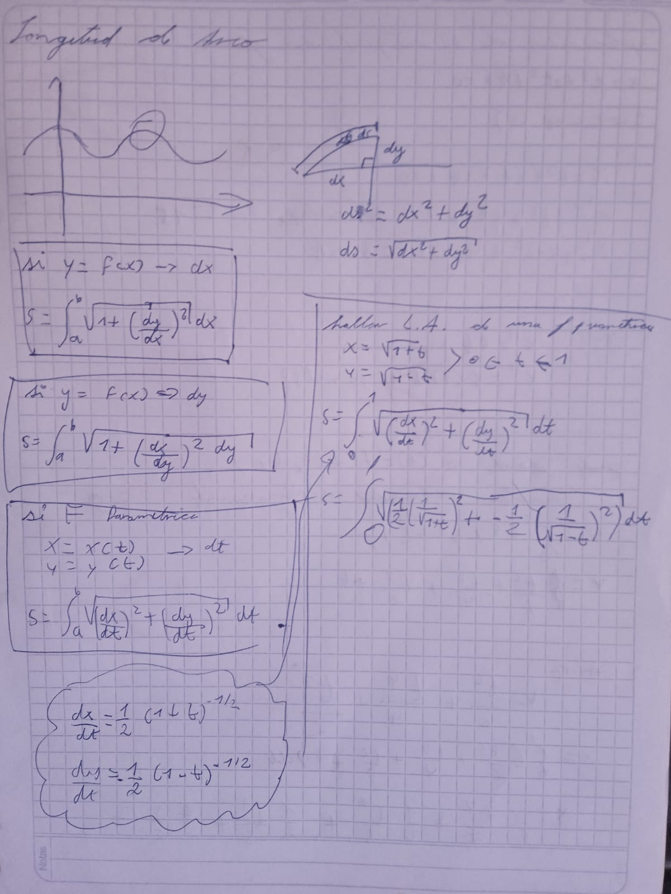
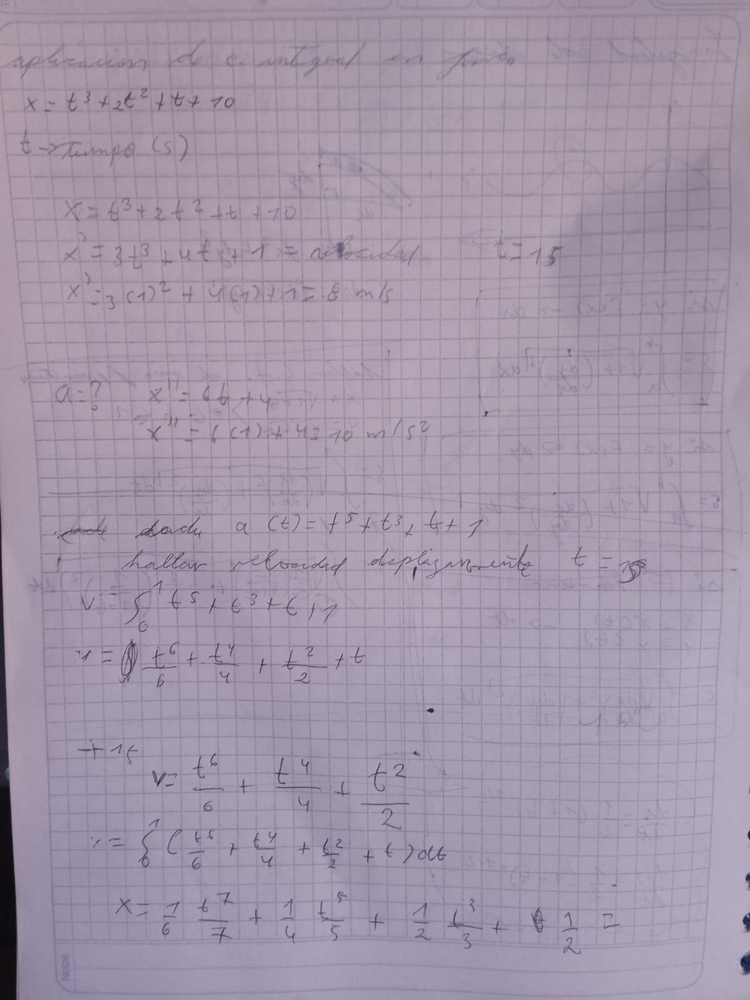

Estudiar esta Cálculo Integral, provee de conocimientos en diferentes áreas del campo de las matemáticas, ilustrando conceptos como el cálculo en la matemática de los cambios (velocidades y aceleraciones). Ilustra una gran variedad de conceptos que han permitido a científicos, ingenieros y economistas elaborar modelos para situaciones de la vida real. Resaltar las múltiples aplicaciones del cálculo integral, como un conjunto de herramientas que se van a utilizar en las ciencias exactas, sociales, naturales, y administrativas. La importancia de estas ciencias en la educación, se basa en que muchos fenómenos de la vida diaria están regidos por estas ciencias.
La idea de la integral indefinida supuso un paso más en el camino de la abstracción emprendido por las matemáticas modernas. Con ella, la integral dejó de referirse únicamente a un modo de determinar las áreas que forman curvas y rectas para asumir la condición de función en sí, susceptible de formar parte de ecuaciones y descripciones de modelos en el gran marco de las teorías del análisis matemático.
la integral indefinida es una operación que busca encontrar la función.
El teorema fundamental del cálculo dice que la derivada de la integral de la función continua es la propia . El teorema fundamental del cálculo nos indica que la derivación y la integración son operaciones inversas. Al integrar una función continua y luego derivarla se recupera la función original.
f(x)=x
f´(x)=1
dy/dx=1-
estas son formas de leerlo
La integral definida es un caso de la integral utilizado para determinar el valor de las áreas delimitadas por una gráfica dentro de un intervalo y el eje horizontal. Sele puede encontrar en diversas áreas y contextos como la biología (en crecimiento de poblaciones), robótica (algoritomo de seguimiento de lineas), arquitectura (volúmenes de sólidos), etc, más adelante se dará un ejemplo específico de una aplicación. La integral definida es un caso de la integral utilizado para determinar el valor de las áreas delimitadas por una gráfica dentro de un intervalo y el eje horizontal. Sele puede encontrar en diversas áreas y contextos como la biología (en crecimiento de poblaciones), robótica (algoritomo de seguimiento de lineas), arquitectura (volúmenes de sólidos), etc, más adelante se dará un ejemplo específico de una aplicación.
A diferencia de las derivadas, no existe una fórmula para poder integrar cualquier producto de funciones. Lo más cercano que tenemos a una regla para integrar producto de funciones es la integración por partes. Curiosamente, se basa en la fórmula para derivar un producto de funciones. Sin embargo, la integración por partes transforma una integral de un producto en otra integral. Esta fórmula no funciona para integrar todos los productos de funciones
la sustitución trigonométrica consiste en la sustitución de determinadas expresiones mediante el uso de funciones trigonométricas. En cálculo, la sustitución trigonométrica es una técnica que permite evaluar integrales, puesto que se pueden utilizar identidades trigonométricas para simplificar ciertas integrales que contienen expresiones radicales
Las fracciones parciales es un método de integración que permite resolver integrales de ciertas funciones racionales que no se pueden resolver por los otros métodos (formula directa, por partes, cambio de variable, etc.)
El área bajo la curva formada por el trazo de la función f(x) y el eje x se puede obtener aproximadamente, dibujando rectángulos de anchura finita y altura f igual al valor de la función en el centro del intervalo.
  
Los sólidos de revolución son sólidos que se generan al girar una región plana alrededor de un eje. Por ejemplo: el cono es un sólido que resulta al girar un triángulo recto alrededor de uno de sus catetos, el cilindro surge al girar un rectángulo alrededor de uno de sus lados.
 la longitud de arco, también llamada rectificación de una curva, es la medida de la distancia o camino recorrido a lo largo de una curva o dimensión lineal. Históricamente, ha sido difícil determinar esta longitud en segmentos irregulares; aunque fueron utilizados varios métodos para curvas específicas.
se pueden usar integrales para resolver problemas de física relacionados con el movimiento uniformemente acelerado, el trabajo, las distancias, los volúmenes de sólidos de revolución y las esferas. Incluye ejemplos de cómo calcular la velocidad, el trabajo y la distancia recorrida usando integrales definidas. También muestra cómo calcular volúmenes de sólidos generados al girar funciones sobre un eje y el volumen de una esfera usando integrales.
